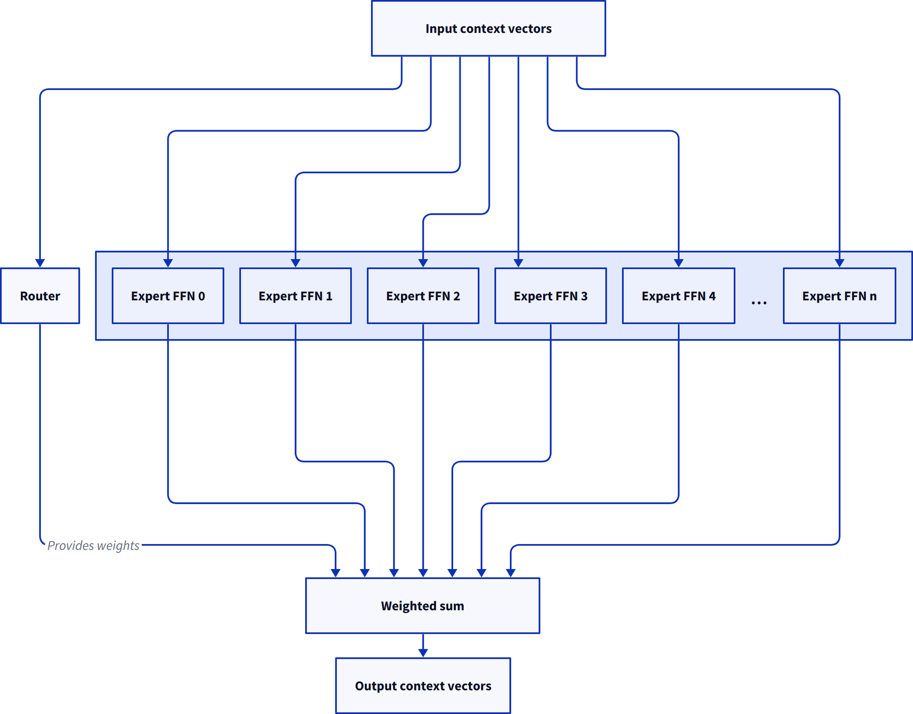
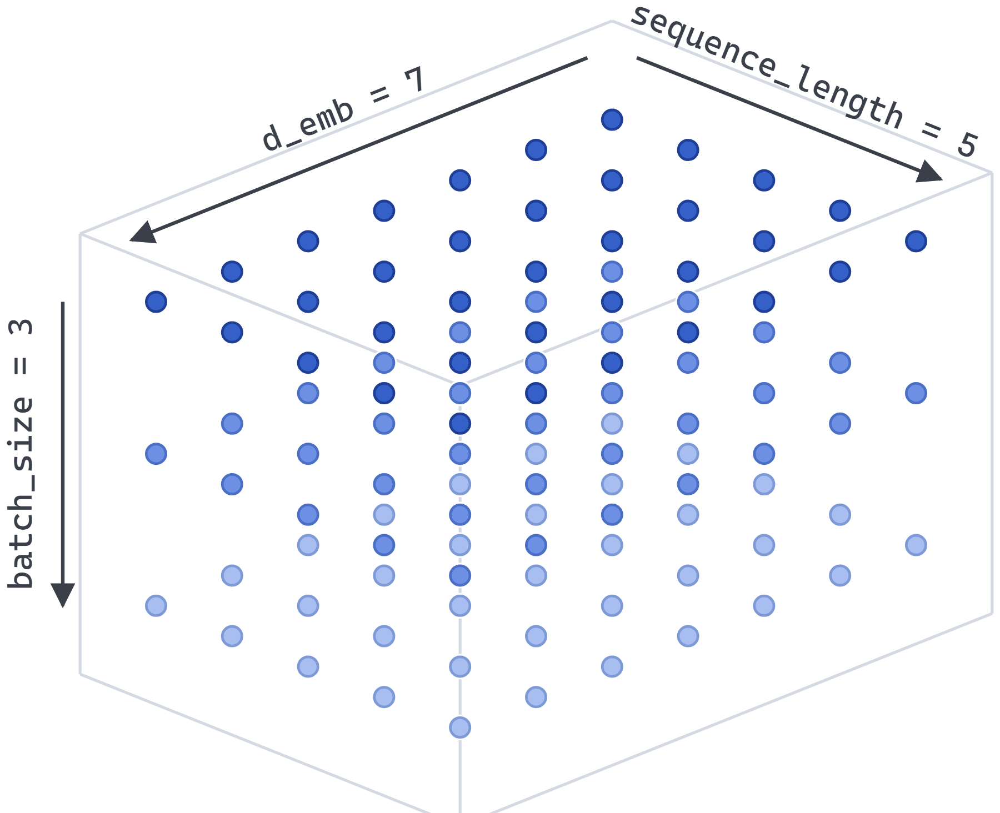
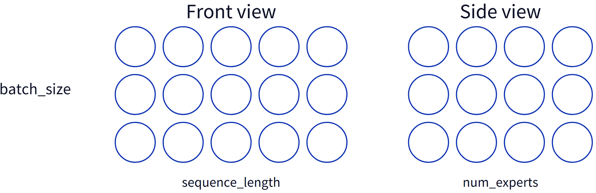
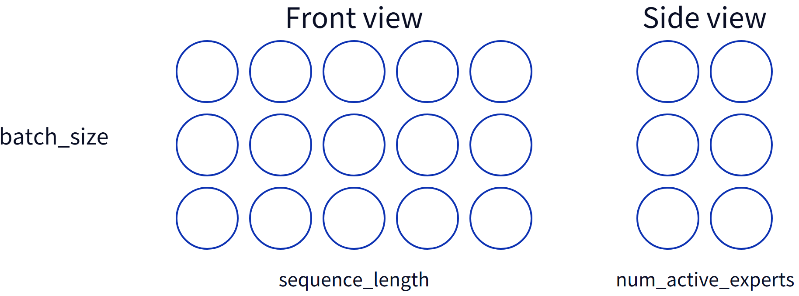
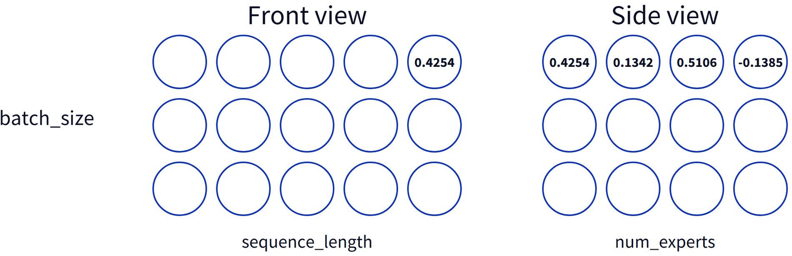
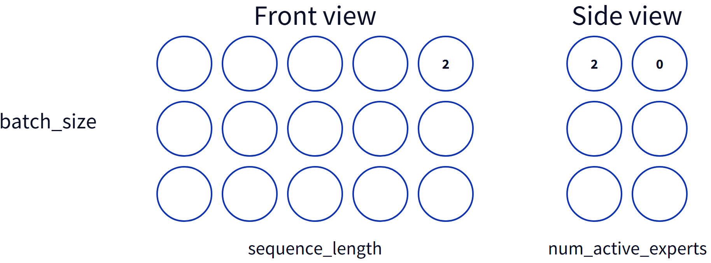
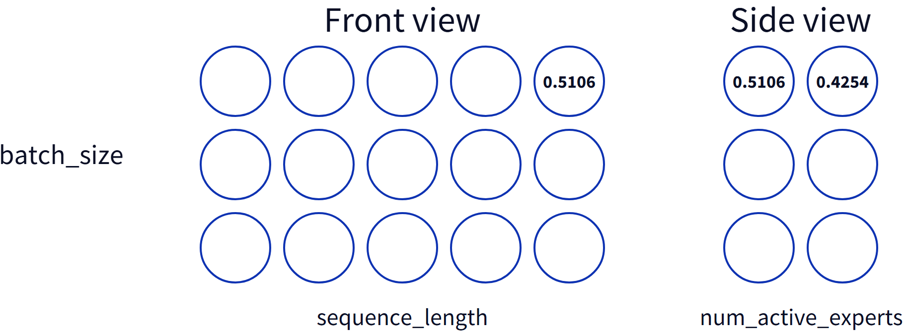

这是「从GPT-2到MoE」系列的第二篇。上一篇讲清了MoE的机制和第一个坑：如果只是挑出top-k专家再相加，路由器的计算根本不在从损失回溯的计算图上，永远拿不到梯度。
这一篇解决两件事：怎么用掩码把路由权重变稀疏，以及真正的代码长什么样。作者用一串长方体图示把xs、routing_logits、top_k_values、expert_weights的形状关系讲透，中间还踩到了k = 1的梯度陷阱。
我们真正想要的，是路由器输出里有一部分权重恰好为零。具体说，在k个激活专家、总共n个的设定下，除了top k之外其余权重都为零。这样运行网络时就可以直接跳过这些零权重专家，得到的结果和「不跳过」完全一样。
《Outrageously Large Neural Networks》用一个技巧做到了这件事，而这个技巧对读过GPT-2因果掩码的人来说很熟悉。我们把路由器输出的「原始」权重叫作logits：
In [7]: logits
Out[7]:
tensor([ 0.0418, -0.1140, 0.4254, 0.1342, 0.5106, -0.1385],
grad_fn=<ViewBackward0>)再过一次softmax：
In [9]: torch.softmax(logits, dim=-1)
Out[9]:
tensor([0.1459, 0.1249, 0.2141, 0.1600, 0.2332, 0.1218],
grad_fn=<SoftmaxBackward0>)这样得到了一组初始权重，但我们要的是除top k以外全为零。
如果希望某个值经过softmax之后为零，那它在进来时必须等于负无穷。具体代码稍后给，这里先假设我们有办法把除top-k之外的值都设成负无穷。在k = 2的具体例子里，改完之后的原始logits是：
In [15]: masked_top_k_logits
Out[15]:
tensor([ -inf, -inf, 0.4254, -inf, 0.5106, -inf],
grad_fn=<ScatterBackward0>)现在再过一次softmax：
In [17]: torch.softmax(masked_top_k_logits, dim=-1)
Out[17]:
tensor([0.0000, 0.0000, 0.4787, 0.0000, 0.5213, 0.0000],
grad_fn=<SoftmaxBackward0>)于是我们就有权重了。有了这些权重，我们可以概念上跑这个「所有专家都激活」的网络：

但把权重为零的专家跳过。上面这几步提供的权重，意味着路由器会被训练到。
这挺巧妙的。
不过有一点必须强调。想象我们只有一个激活专家，也就是k = 1，那么其余全被掩掉：
In [15]: masked_top_k_logits
Out[15]:
tensor([ -inf, -inf, -inf, -inf, 0.5106, -inf],
grad_fn=<ScatterBackward0>)再做一次softmax：
In [17]: torch.softmax(masked_top_k_logits, dim=-1)
Out[17]:
tensor([0.0000, 0.0000, 0.0000, 0.0000, 1.0000, 0.0000],
grad_fn=<SoftmaxBackward0>)权重永远是1，和原始logits无关。而如果一个函数永远只能返回同一个结果，它的导数就恒为零，于是没有梯度，也就训练不了。
有意思的是，Switch Transformers那篇论文几乎是不声不响地处理了这个问题。他们讨论的正是k = 1的MoE：先提到《Outrageously Large Neural Networks》的路由方案，然后给出自己的算法，不把非top-k替换成负无穷再softmax，而是先softmax，再把非top-k置零。他们没有强调两者的区别。
在这次实验里，我还是决定沿用非Switch Transformers的算法，也就是「先替换成负无穷再softmax」，并加上保护代码，防止不小心把k设成1。毕竟我见过的大多数较新的MoE模型至少有两个激活专家。好消息是它不仅能跑通，事后对照还发现和Mixtral的选择一致，算是个不错的背书。
到这里，MoE在理论上怎么工作已经清楚了。开始写代码。
我从《Build a Large Language Model (from Scratch)》里的代码起步。在那里，Transformer块长这样：
class TransformersBlock(nn.Module):
def __init__(self, cfg):
super().__init__()
self.att = MultiHeadAttention(
d_in=cfg["emb_dim"],
d_out=cfg["emb_dim"],
context_length=cfg["context_length"],
num_heads=cfg["n_heads"],
dropout=cfg["drop_rate"],
qkv_bias=cfg["qkv_bias"],
)
self.ff = FeedForward(cfg)
self.norm1 = LayerNorm(cfg["emb_dim"])
self.norm2 = LayerNorm(cfg["emb_dim"])
self.drop_shortcut = nn.Dropout(cfg["drop_rate"])
def forward(self, x):
shortcut = x
x = self.norm1(x)
x = self.att(x)
x = self.drop_shortcut(x)
x = x + shortcut
shortcut = x
x = self.norm2(x)
x = self.ff(x)
x = self.drop_shortcut(x)
x = x + shortcut
return x我想保留「能用MoE也能用非MoE模式」的能力，做法是扩展cfg里的模型配置，加一个可选的moe段，把MoE相关的东西都塞进去；如果没有这一段，就构建一个普通的密集LLM。为此我把 __init__ 里给self.ff赋值的那一行换成：
self.is_moe = "moe" in cfg
if self.is_moe:
self.ff = MixtureOfExperts(cfg)
else:
self.ff = FeedForward(cfg)接下来该实现MixtureOfExperts类本身了。它显然需要的配置是：总共有多少专家、每个token激活多少专家：
class MixtureOfExperts(nn.Module):
def __init__(self, cfg):
super().__init__()
self.num_experts = cfg["moe"]["num_experts"]
self.num_active_experts = cfg["moe"]["num_active_experts"]前面说过，只有一个激活专家时，softmax之后的权重会被钉死在1，训练不了，所以我决定防一手，顺带也防住配置里另一个显而易见的错误：
if self.num_active_experts < 2:
raise Exception(
f"Can't train with ``num_active_experts`` < 2 (got {self.num_active_experts})"
)
if self.num_active_experts > self.num_experts:
raise Exception(
f"{self.num_active_experts=} is larger than {self.num_experts=}"
)然后是路由器：把进来的上下文向量（这份代码里大小是cfg["emb_dim"]）映射到专家数量：
self.router = nn.Linear(cfg["emb_dim"], self.num_experts, bias=False)我选择不带偏置，因为我模糊地觉得这是当下的潮流，没有比这更站得住脚的理由了。
接下来需要num_experts个专家，每个就是我们非MoE模式下用的那个FeedForward模块：
self.experts = nn.ModuleList([
FeedForward(cfg) for _ in range(self.num_experts)
])它们必须放进nn.ModuleList。如果只是放进普通list（我试过），PyTorch就不会把它们注册为「含有本模块参数的子模块」。训练时我们用这样的代码建优化器：
optimizer = torch.optim.AdamW(
model.parameters(),
lr=learning_rate, weight_decay=weight_decay
)所以任何不在model.parameters() 里的东西永远不会被更新，这可不是好事。
到这里零件都齐了，该写前向了：拿到路由logits，做top-k和softmax，再用这些结果去跑专家。
拿logits很简单。看forward方法：
def forward(self, xs):我们拿到一组进来的上下文向量xs，形状是 (batch_size, sequence_length, d_emb)。
我们试着把它可视化。理解张量运算时，靠直觉抄近路是可以的，但我认为要真正理解接下来的几步，脑子里最好有个更具体的东西。
你可以把三阶张量想象成一个长方体。设batch_size为3、sequence_length为5、d_emb为7（为了简单刻意取很小的值），它看起来是这样：

在这个视角里，「正视图」里的每个圆是某个上下文向量的第一个数字，而「侧视图」里的每一行则是构成某个上下文向量的那串数字。希望这样好想象一些。
现在，像self.router这样的PyTorch nn.Linear层，作用在传入张量的最后一维上。对我们的xs（形状是batch_size、sequence_length、d_emb）来说，它会作用在d_emb这一维上，也就是对每个上下文向量独立运算，这正是我们想要的。
routing_logits = self.router(xs)这样得到一组logits，形状是 (batch_size, sequence_length, num_experts)。在我们的可视化里，就是一个batch_size × sequence_length × num_experts的长方体；设可用专家数为4，画出来是这样：
同样，看正视图，每个圆代表某个上下文向量routing logits的第一个元素；侧视图里每一行则是一个上下文向量的全部routing logits。数据在长方体里的位置是对的，而且从我们叫「正视图」的这一面看，它的维度和xs相同，这很有用。

要知道每个上下文向量该走哪些专家，就得对routing_logits里的每个上下文向量取top-k。PyTorch有现成的topk函数：
top_k_values, top_k_indices = torch.topk(
routing_logits,
k=self.num_active_experts,
dim=-1
)dim=-1表示在最后一维上操作，也就是长度为num_experts的那一维。它返回最大的self.num_active_experts个值以及它们的位置，两个张量形状都是 (batch_size, sequence_length, num_active_experts)。
于是我们又有了两个张量，可以画成长方体，都是batch_size × sequence_length × num_active_experts。设num_active_experts = 2：

top_k_values和top_k_indices的形状都是这样。和平常一样，「正视图」那一面是相同的：每个圆对应一个上下文向量，对top_k_values来说存的是该上下文向量logits里的最大值（因为topk返回的结果是排好序的），对top_k_indices来说存的则是那个最大值在logits列表里的下标。看侧视图，我们看到的是某个上下文向量的top-k logit值或下标列表。
现在我们要一个能过softmax拿到权重的routing_logits版本。为此需要把每个上下文向量的非top-k值替换成负无穷。
我最终想到的方案（中间试过好几版）是这样的：先建一个和routing_logits形状相同、全部填充负无穷的张量：
top_k_routing_logits = torch.full_like(routing_logits, -torch.inf)现在，top_k_values里是我们想放进去的值，top_k_indices里是它们在logits列表里应该待的位置，其余的值保持负无穷就好。

它的形状当然和routing_logits一样：
top_k_values和top_k_indices的前两维与routing_logits（因而也与top_k_routing_logits）兼容，也就是在可视化里它们的正视图是一样的；把上面这张的正视图和图8的正视图对比一下。
对我们所有的张量来说，前两维最终都对应xs里的一个上下文向量，区别只在最后一维和里面装的数据。
PyTorch的Tensor上有一个scatter_ 函数，接收一组位置和一组值。它取一个指定的维度，把这个维度本质上当作一组列表；再接收两个维数相同、除指定维度之外各维大小都一致的其他张量，把其中一个当作值列表、另一个当作下标列表，用给定的值覆盖指定下标处的内容。
听起来很有用。我们具体化一下。记住，在所有这些长方体的可视化里，我们看的正视图最终对应一个上下文向量。在routing_logits里，它就是该向量的专家路由原始logits；正视图上的数字是第一个logits，对应路由到第一个专家。看侧视图，每一行对应某个上下文向量的整组logits。

现在只盯住这一点。在routing_logits里，我们这个具体的上下文向量对应的logit值可能长这样：

用同样的画法，k = 2时top_k_indices对应的部分是这样：
也就是说，topk函数认出原始logits里下标2的值最大，0的值第二大。

同理，top_k_values里是这样：
这些图开始有点难啃了，我们把这个上下文向量的数据直接写成列表。对我们选中的这个上下文向量，图10里的logits是：
[0.4254, 0.1342, 0.5106, -0.1385]图11里的top-k下标是：
[2, 0]图12里的值是：
[0.5106, 0.4254]我们的top_k_routing_logits张量全是负无穷，形状和routing_logits一样，所以它对应的部分是：
[-inf, -inf, -inf, -inf]scatter_ 会做的是：选出下标2和0（依据top_k_indices里的值），把top_k_values里对应的数字复制到已有内容之上：

[0.4254, -inf, 0.5106, -inf]它会为那个正视图上的每一个位置都做这件事。于是我们就得到了想要的：每个上下文向量一张路由logits网格，其中非top-k的位置已经被替换成负无穷。
相当漂亮。代码如下：
top_k_routing_logits.scatter_(dim=-1, index=top_k_indices, src=top_k_values)我起初有点担心「把logits换成静态张量再把这些值scatter进去」这个做法会破坏计算图，但实测并不会。我的直觉是：那些负无穷是凭空造出来的，对反向传播来说是死路；而我们复制进去的logits来自前面的计算，所以不是。
做完这一步，我们就有了top-k logits，可以送进softmax了：
expert_weights = torch.softmax(top_k_routing_logits, dim=-1)于是权重到手，又是这样一个长方体：
和之前一样，正视图上的某个数字是某个上下文向量第一个专家的权重，侧视图的每一行则是该上下文向量在所有专家上的全部权重。经过softmax之后，该上下文向量上激活专家的权重是正数，未激活专家的权重是零。
参考：https://www.gilesthomas.com/2026/09/gpt-2-to-moe